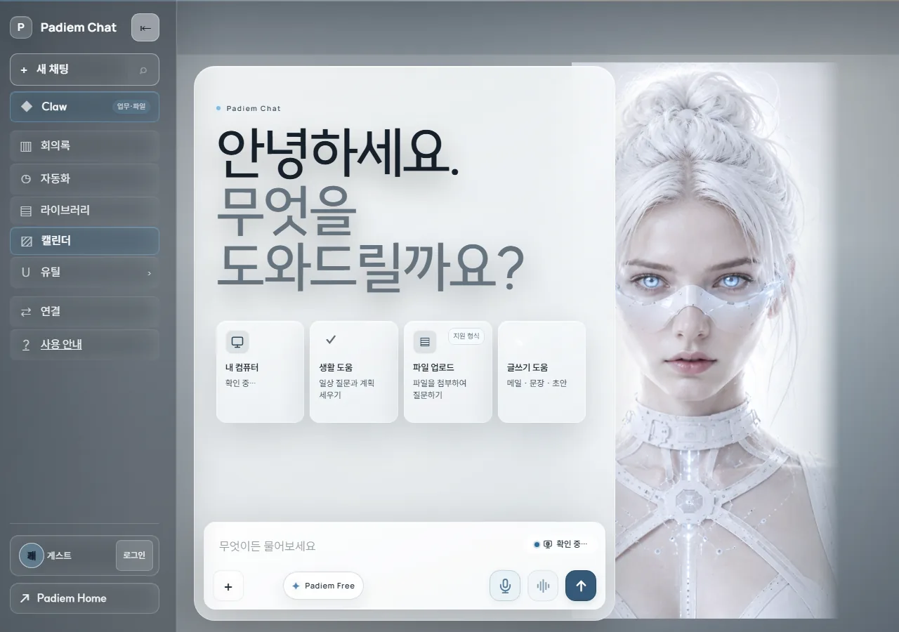

① 처음 온 사람
첫 화면에서 로그인 경로를 찾고 첫 질문과 답변까지 확인합니다.
준비물: 로그인 없이 1–3단계까지 볼 수 있어요. 4–6단계는 준비된 계정이 필요해 지금은 화면 자리를 비워 두었습니다.
1단계 · 첫 화면에서 무엇을 물어볼지 시작해요.
이렇게 해요: https://chat.padiem.net/ 열기
이렇게 보여요: “안녕하세요.”와 “무엇을 도와드릴까요?” 표시
화면에서 확인하는 것: 화면이 열렸는지, 로드 걸린 시간, 시간 초과 여부

2단계 · 게스트 상태를 확인해요.
이렇게 해요: 로그인 없이 게스트 상태 확인
이렇게 보여요: 로그인하지 않은 상태 표시
화면에서 확인하는 것: 응답 여부, 단계 걸린 시간

3단계 · 로그인이 필요한 항목은 로그인 안내로 안전하게 막아요.
이렇게 해요: 로그인 없이 대화 목록 요청
이렇게 보여요: “로그인이 필요합니다.” 안내
화면에서 확인하는 것: 응답 여부, 단계 걸린 시간

4단계 · 준비한 계정으로 로그인 상태를 확인해요.
[화면 준비 중 — 시험 계정 확정 후 촬영]
이렇게 해요: 로그인한 상태로 Chat을 열고 로그인 상태 확인
이렇게 보여요: 계정으로 이어짐
화면에서 확인하는 것: 응답 여부, 단계 걸린 시간
5단계 · 궁금한 점을 질문으로 보내요.
[화면 준비 중 — 시험 계정 확정 후 촬영]
이렇게 해요: 질문을 입력해 보내기
이렇게 보여요: 대화에 질문 표시
화면에서 확인하는 것: 응답 상태, 완료 걸린 시간, 시간 초과 여부
6단계 · 답변을 읽고 필요한 내용을 확인해요.
[화면 준비 중 — 시험 계정 확정 후 촬영]
이렇게 해요: 답변 확인
이렇게 보여요: 답변 표시, 요청이 시간 초과가 아님
화면에서 확인하는 것: 응답 여부, 완료 걸린 시간, 시간 초과 여부
영상과 자막
영상 준비 중 — 녹화와 자막은 아직 이 화면에 올리지 않았습니다.
촬영 범위: 게스트 1–3단계.
계정 4–6단계는 [화면 준비 중 — 시험 계정 확정 후 촬영]로 두고 같은 자리에 이어 붙입니다.